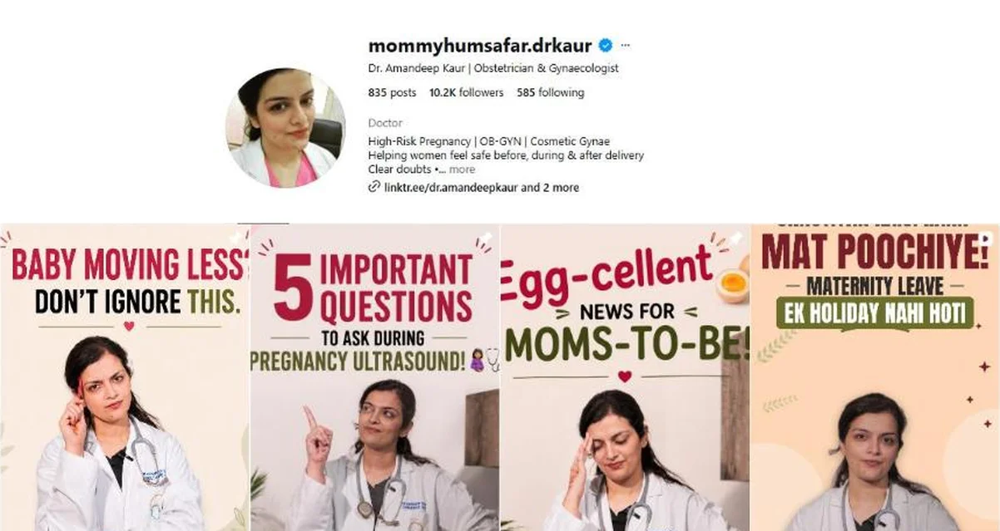

Instagram · Healthcare · 2026
Dr. Amandeep Kaur
Hinglish, hook-first content for a verified obstetrician and gynaecologist, answering the questions women hesitate to ask in person.

The brief
Dr. Kaur specialises in high-risk pregnancy. Her patients arrive with questions they have been carrying for months: about periods, pregnancy, PCOS, contraception, and the advice they keep hearing at home. The goal was an Instagram account that answers those questions honestly, in the language her patients actually speak, so women feel safe before they ever walk into her clinic.
My approach
Every post starts with a sentence a patient might say out loud, or be too shy to. "Saas ne kaha, pills mat khao." "Baby aaj thoda kam move kar raha hai, normal hai?" We then answer it clearly and without fear. Writing in Hinglish made the account feel like a conversation with a doctor you trust, not a lecture.
What I did
- Planned content pillars across pregnancy, postpartum, family planning, periods, PCOS and sexual health.
- Wrote hook-first scripts and captions in Hinglish, built around real myths and real questions.
- Designed posts and carousels and edited reels, including a numbered "Sambhalo" episode series.
- Organised 14 topic-wise highlights so the profile works as a library women can come back to.
- Managed posting and helped grow the account.
In healthcare content, a good hook is the question a patient is too shy to ask out loud.